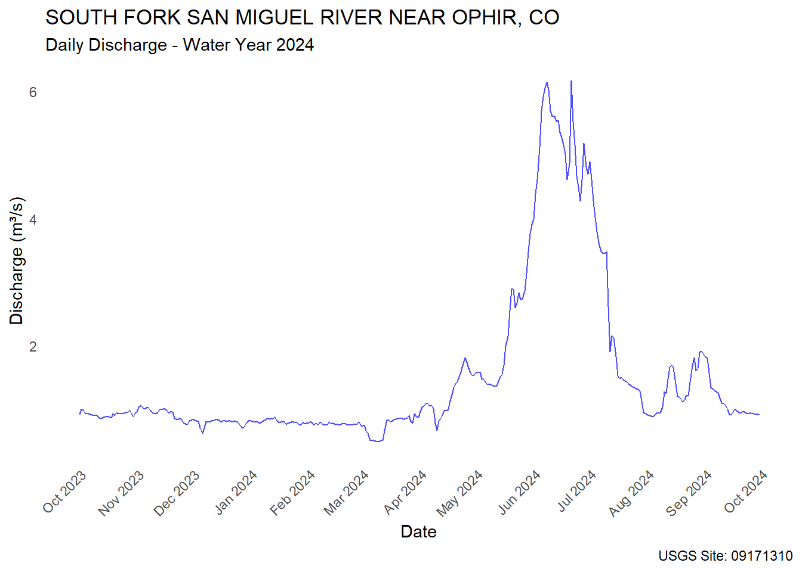
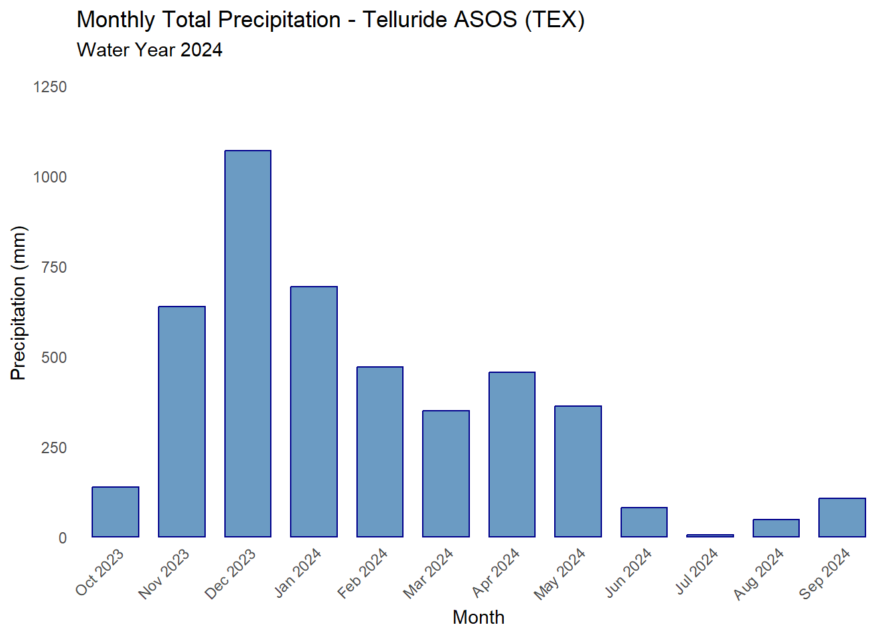
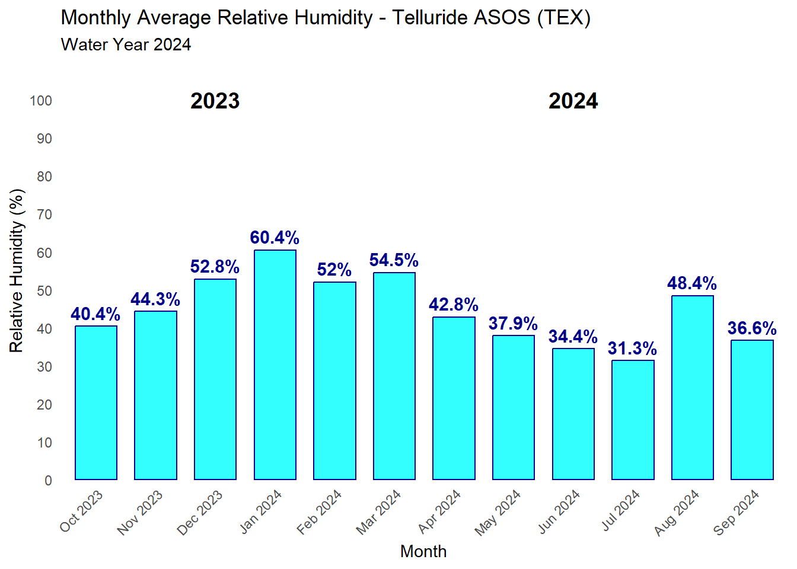
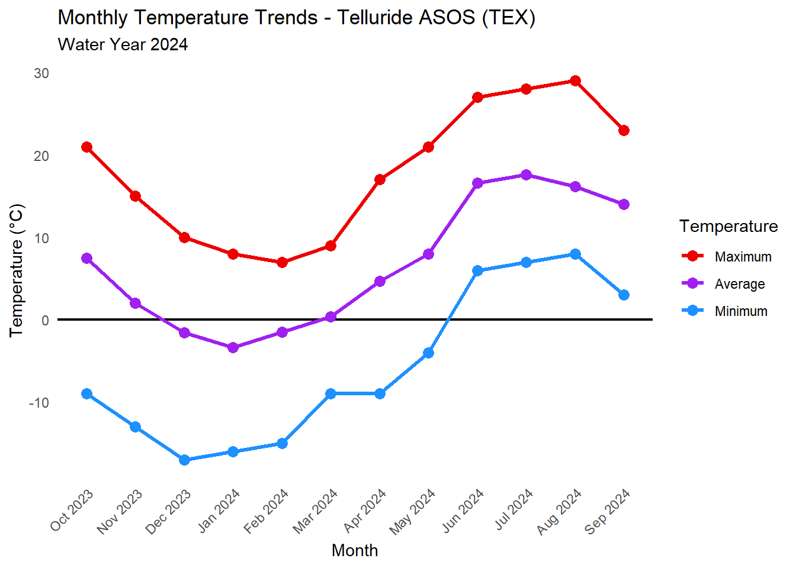
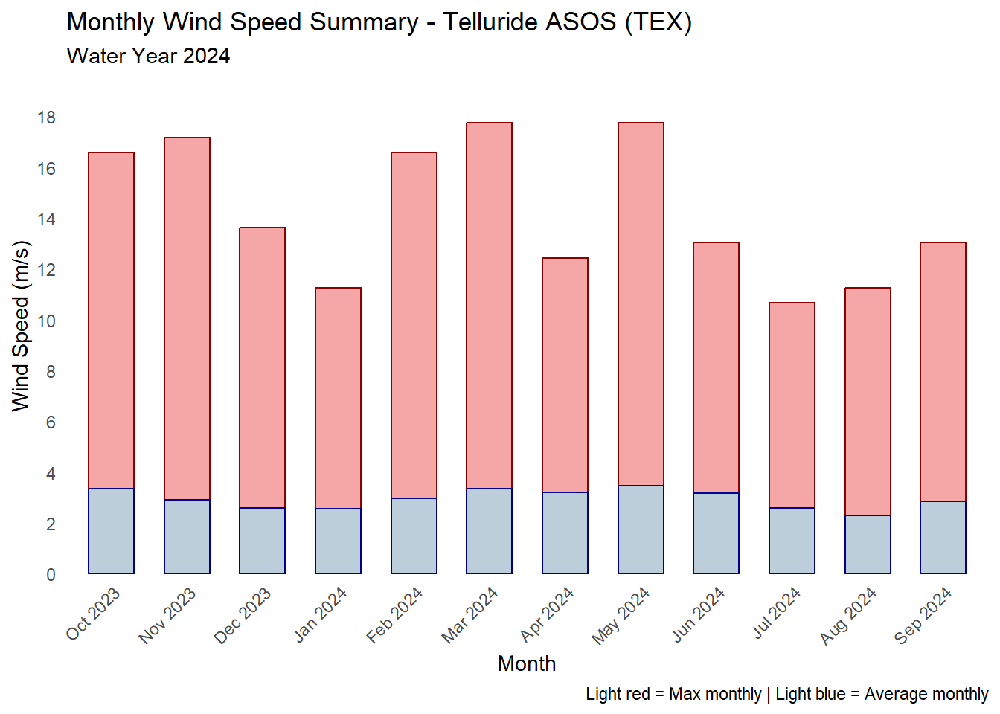
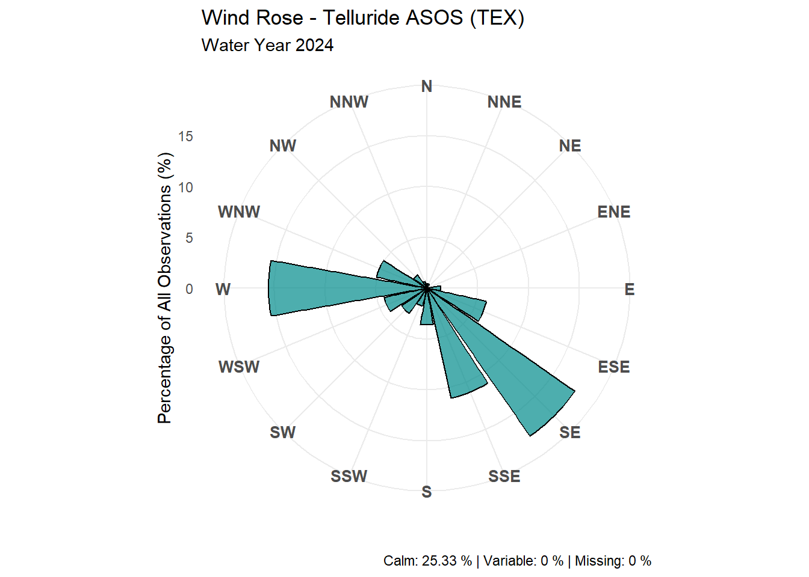
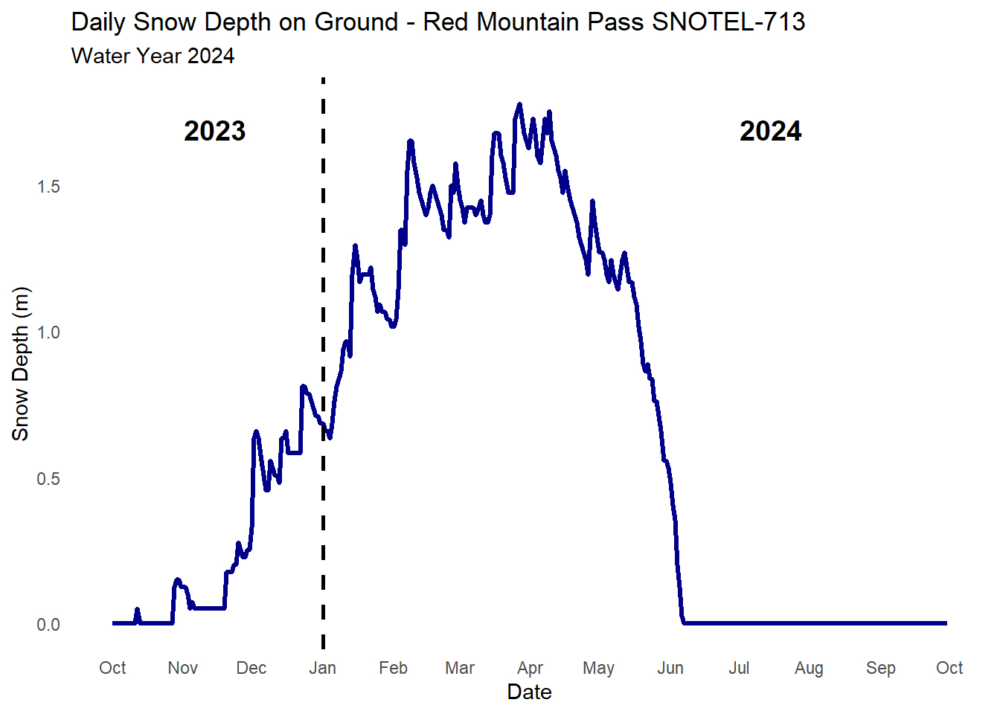
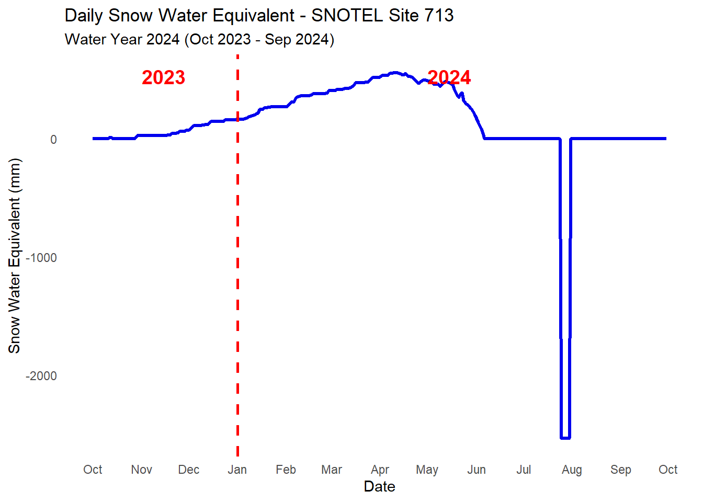
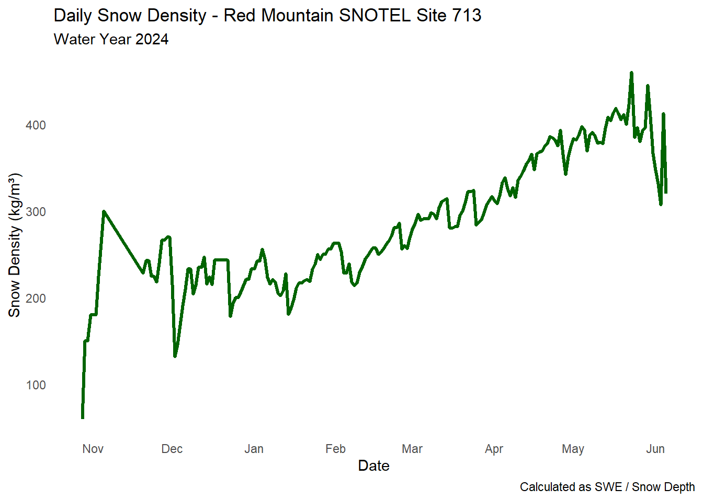

library(tidyverse)
library(dplyr)
library(ggplot2)
library(lubridate)
library(dataRetrieval)
wy_start <- as.Date("2023-10-01")
wy_end <- as.Date("2024-09-30")
ASOS <- read.table("data/ASOS.txt", sep = ",", header = TRUE)
ASOS_ST <- read.table("data/ASOS_ST.txt", sep = ",", header = TRUE)
SNOWTEL_csv <- read.table("data/SNOWTEL.csv", sep = ",", header = TRUE)
SNOWTEL_txt <- read.table("data/SNOWTEL.txt", sep = "\t", header = TRUE)WY2024 Climate Observations
Data sources: Telluride ASOS station (TEX) and Red Mountain Pass SNOTEL site 713. Water Year 2024 = October 1, 2023 – September 30, 2024.
Setup
Discharge (USGS NWIS)
site <- "09171310"
pcode <- "00060"
start_date <- "2023-10-01"
end_date <- "2024-09-30"
discharge_data <- readNWISdv(
siteNumbers = site,
parameterCd = pcode,
startDate = start_date,
endDate = end_date
)Warning in readNWISdv(siteNumbers = site, parameterCd = pcode, startDate =
start_date, : NWIS servers are slated for decommission. Please begin to migrate
to read_waterdata_daily.GET: https://waterservices.usgs.gov/nwis/dv/?site=09171310&format=waterml%2C1.1&ParameterCd=00060&StatCd=00003&startDT=2023-10-01&endDT=2024-09-30discharge_clean <- discharge_data %>%
rename(
site_no = site_no,
date = Date,
discharge_cfs = X_00060_00003,
discharge_cd = X_00060_00003_cd
) %>%
mutate(
water_year = ifelse(month(date) >= 10, year(date) + 1, year(date)),
month = month(date, label = TRUE),
day_of_year = yday(date),
day_of_wy = ifelse(month(date) >= 10,
yday(date) - yday(as.Date(paste0(year(date), "-09-30"))),
yday(date) + yday(as.Date(paste0(year(date)-1, "-12-31"))) -
yday(as.Date(paste0(year(date)-1, "-09-30")))),
discharge_m3s = discharge_cfs * 0.0283168,
discharge_af_day = discharge_cfs * 1.983,
is_missing = is.na(discharge_cfs)
) %>%
filter(water_year == 2024)
cat("=== DISCHARGE STATISTICS (WY2024) ===\n")=== DISCHARGE STATISTICS (WY2024) ===summary(discharge_clean$discharge_m3s) Min. 1st Qu. Median Mean 3rd Qu. Max.
0.4927 0.8184 0.9429 1.5181 1.4746 6.1731 site_info <- readNWISsite(site)Warning in readNWISsite(site): NWIS servers are slated for decommission. Please
begin to migrate to read_waterdata_monitoring_locationGET: https://waterservices.usgs.gov/nwis/site/?siteOutput=Expanded&format=rdb&site=09171310cat("Site Name:", site_info$station_nm, "\n")Site Name: SOUTH FORK SAN MIGUEL RIVER NEAR OPHIR, CO cat("Drainage Area:", site_info$drain_area_va, "square miles\n")Drainage Area: 41.7 square milesdischarge_plot <- ggplot(discharge_clean, aes(x = date, y = discharge_m3s)) +
geom_line(color = "blue", alpha = 0.7) +
labs(
title = paste(site_info$station_nm),
subtitle = "Daily Discharge - Water Year 2024",
x = "Date", y = "Discharge (m³/s)",
caption = paste("USGS Site:", site)
) +
theme_minimal() +
theme(axis.text.x = element_text(angle = 45, hjust = 1),
panel.grid = element_blank()) +
scale_x_date(date_breaks = "1 month", date_labels = "%b %Y")
print(discharge_plot)
Precipitation (ASOS TEX)
precipitation_data <- ASOS_ST %>%
mutate(
datetime = ymd_hm(valid, tz = "UTC"),
date = as.Date(datetime),
precip_mm = as.numeric(p01m)
) %>%
filter(date >= wy_start, date <= wy_end,
!is.na(precip_mm), precip_mm >= 0)Warning: There was 1 warning in `mutate()`.
ℹ In argument: `precip_mm = as.numeric(p01m)`.
Caused by warning:
! NAs introduced by coercionmonthly_precip_stats <- precipitation_data %>%
mutate(
month = month(datetime, label = TRUE),
month_num = month(datetime),
year = year(datetime),
wy_month_order = ifelse(month_num >= 10, month_num - 9, month_num + 3),
month_year = paste(month, year)
) %>%
group_by(month, month_num, year, wy_month_order, month_year) %>%
summarise(
total_precip = round(sum(precip_mm, na.rm = TRUE), 1),
max_daily_precip = round(max(precip_mm, na.rm = TRUE), 1),
precip_days = sum(precip_mm > 0, na.rm = TRUE),
n_obs = n(),
.groups = 'drop'
) %>%
arrange(wy_month_order) %>%
mutate(
total_precip = case_when(
month_year == "Jun 2024" ~ 81.17,
month_year == "Jul 2024" ~ 5.06,
month_year == "Aug 2024" ~ 47.82,
TRUE ~ total_precip
)
)
monthly_precip_plot <- ggplot(monthly_precip_stats,
aes(x = factor(wy_month_order))) +
geom_col(aes(y = total_precip), fill = "steelblue", alpha = 0.8,
color = "darkblue", width = 0.7) +
scale_x_discrete(labels = monthly_precip_stats$month_year) +
labs(
title = "Monthly Total Precipitation - Telluride ASOS (TEX)",
subtitle = "Water Year 2024",
x = "Month", y = "Precipitation (mm)"
) +
theme_minimal() +
theme(axis.text.x = element_text(angle = 45, hjust = 1),
panel.grid = element_blank()) +
scale_y_continuous(expand = expansion(mult = c(0, 0.1)),
limits = c(0, max(monthly_precip_stats$total_precip) * 1.1))
monthly_precip_plot
Relative Humidity (ASOS TEX)
humidity_data <- ASOS %>%
mutate(
datetime = ymd_hm(valid, tz = "UTC"),
date = as.Date(datetime),
relh = as.numeric(relh)
) %>%
filter(date >= wy_start, date <= wy_end,
!is.na(relh), relh >= 0, relh <= 100)Warning: There was 1 warning in `mutate()`.
ℹ In argument: `relh = as.numeric(relh)`.
Caused by warning:
! NAs introduced by coercionmonthly_humidity_stats <- humidity_data %>%
mutate(
month_num = month(datetime),
year = year(datetime),
wy_month_order = ifelse(month_num >= 10, month_num - 9, month_num + 3),
month_year = paste(month(datetime, label = TRUE), year)
) %>%
group_by(month_num, year, wy_month_order, month_year) %>%
summarise(
avg_humidity = round(mean(relh, na.rm = TRUE), 1),
min_humidity = round(min(relh, na.rm = TRUE), 1),
max_humidity = round(max(relh, na.rm = TRUE), 1),
n_obs = n(),
.groups = 'drop'
) %>%
arrange(wy_month_order)
monthly_humidity_plot <- ggplot(monthly_humidity_stats,
aes(x = factor(wy_month_order))) +
geom_col(aes(y = avg_humidity), fill = "cyan", alpha = 0.8,
color = "darkblue", width = 0.7) +
geom_text(aes(y = avg_humidity, label = paste0(avg_humidity, "%")),
vjust = -0.5, size = 4, color = "darkblue", fontface = "bold") +
annotate("text", x = 3, y = 100, label = "2023",
color = "black", size = 5, fontface = "bold") +
annotate("text", x = 9, y = 100, label = "2024",
color = "black", size = 5, fontface = "bold") +
scale_x_discrete(labels = monthly_humidity_stats$month_year) +
labs(
title = "Monthly Average Relative Humidity - Telluride ASOS (TEX)",
subtitle = "Water Year 2024",
x = "Month", y = "Relative Humidity (%)"
) +
theme_minimal() +
theme(axis.text.x = element_text(angle = 45, hjust = 1),
panel.grid = element_blank()) +
scale_y_continuous(expand = expansion(mult = c(0, 0.1)),
limits = c(0, 100), breaks = seq(0, 100, 10))
print(monthly_humidity_plot)
Temperature (ASOS TEX)
temperature_data <- ASOS %>%
mutate(
datetime = ymd_hm(valid, tz = "UTC"),
date = as.Date(datetime),
temp_c = as.numeric(tmpc)
) %>%
filter(date >= wy_start, date <= wy_end,
!is.na(temp_c), temp_c >= -40, temp_c <= 50)Warning: There was 1 warning in `mutate()`.
ℹ In argument: `temp_c = as.numeric(tmpc)`.
Caused by warning:
! NAs introduced by coercionmonthly_temp_stats <- temperature_data %>%
mutate(
month_num = month(datetime),
year = year(datetime),
wy_month_order = ifelse(month_num >= 10, month_num - 9, month_num + 3),
month_year = paste(month(datetime, label = TRUE), year)
) %>%
group_by(month_num, year, wy_month_order, month_year) %>%
summarise(
avg_temp = round(mean(temp_c, na.rm = TRUE), 1),
min_temp = round(min(temp_c, na.rm = TRUE), 1),
max_temp = round(max(temp_c, na.rm = TRUE), 1),
.groups = 'drop'
) %>%
arrange(wy_month_order)
temp_plot_data <- monthly_temp_stats %>%
select(month_year, wy_month_order, min_temp, avg_temp, max_temp) %>%
pivot_longer(cols = c(min_temp, avg_temp, max_temp),
names_to = "temp_type", values_to = "temperature") %>%
mutate(temp_type = factor(temp_type,
levels = c("max_temp", "avg_temp", "min_temp"),
labels = c("Maximum", "Average", "Minimum")))
monthly_temp_plot <- ggplot(temp_plot_data,
aes(x = factor(wy_month_order), y = temperature,
color = temp_type, group = temp_type)) +
geom_hline(yintercept = 0, linetype = "solid", color = "black", linewidth = 0.8) +
geom_line(linewidth = 1.2) +
geom_point(size = 3) +
scale_color_manual(values = c("Maximum" = "red2", "Average" = "purple",
"Minimum" = "dodgerblue")) +
scale_x_discrete(labels = monthly_temp_stats$month_year) +
labs(
title = "Monthly Temperature Trends - Telluride ASOS (TEX)",
subtitle = "Water Year 2024",
x = "Month", y = "Temperature (°C)", color = "Temperature"
) +
theme_minimal() +
theme(axis.text.x = element_text(angle = 45, hjust = 1),
panel.grid = element_blank())
monthly_temp_plot
Wind Speed and Direction (ASOS TEX)
wy_start_date <- as.Date("2023-10-01")
wy_end_date <- as.Date("2024-09-30")
wind_data <- ASOS %>%
mutate(
datetime = ymd_hm(valid, tz = "UTC"),
date = as.Date(datetime),
sped = as.numeric(sped),
wind_dir_clean = case_when(
drct == 0 | sped == 0 ~ "CALM",
drct == 990 ~ "VRB",
is.na(drct) ~ "MISSING",
TRUE ~ as.character(drct)
),
wind_speed_ms = sped * 0.514444
) %>%
filter(date >= wy_start_date, date <= wy_end_date)Warning: There was 1 warning in `mutate()`.
ℹ In argument: `sped = as.numeric(sped)`.
Caused by warning:
! NAs introduced by coercionmonthly_wind_stats <- wind_data %>%
mutate(
month_num = month(datetime),
year = year(datetime),
wy_month_order = ifelse(month_num >= 10, month_num - 9, month_num + 3),
month_year = paste(month(datetime, label = TRUE), year)
) %>%
group_by(month_num, year, wy_month_order, month_year) %>%
summarise(
avg_speed = round(mean(wind_speed_ms, na.rm = TRUE), 2),
max_speed = round(max(wind_speed_ms, na.rm = TRUE), 2),
n_obs = n(),
.groups = 'drop'
) %>%
arrange(wy_month_order)
monthly_plot <- ggplot(monthly_wind_stats, aes(x = factor(wy_month_order))) +
geom_col(aes(y = max_speed), fill = "lightcoral", alpha = 0.7,
color = "darkred", width = 0.6) +
geom_col(aes(y = avg_speed), fill = "lightblue", alpha = 0.8,
color = "darkblue", width = 0.6) +
scale_x_discrete(labels = monthly_wind_stats$month_year) +
labs(
title = "Monthly Wind Speed Summary - Telluride ASOS (TEX)",
subtitle = "Water Year 2024",
x = "Month", y = "Wind Speed (m/s)",
caption = "Light red = Max monthly | Light blue = Average monthly"
) +
theme_minimal() +
theme(axis.text.x = element_text(angle = 45, hjust = 1),
panel.grid = element_blank()) +
scale_y_continuous(breaks = seq(0, 20, 2), expand = expansion(mult = c(0, 0.1)))
print(monthly_plot)
Wind Rose
total_obs <- nrow(wind_data)
calm_obs <- sum(wind_data$wind_dir_clean == "CALM")
vrb_obs <- sum(wind_data$wind_dir_clean == "VRB")
missing_obs <- sum(wind_data$wind_dir_clean == "MISSING")
calm_pct <- round(calm_obs / total_obs * 100, 2)
vrb_pct <- round(vrb_obs / total_obs * 100, 2)
missing_pct <- round(missing_obs / total_obs * 100, 2)
directional_wind <- wind_data %>%
filter(wind_dir_clean != "CALM", wind_dir_clean != "VRB",
wind_dir_clean != "MISSING", !is.na(drct), drct > 0, drct <= 360) %>%
mutate(wind_dir_numeric = as.numeric(wind_dir_clean))
compass_16 <- data.frame(
direction = c("N","NNE","NE","ENE","E","ESE","SE","SSE",
"S","SSW","SW","WSW","W","WNW","NW","NNW"),
angle_start = c(348.75,11.25,33.75,56.25,78.75,101.25,123.75,146.25,
168.75,191.25,213.75,236.25,258.75,281.25,303.75,326.25),
angle_end = c(11.25,33.75,56.25,78.75,101.25,123.75,146.25,168.75,
191.25,213.75,236.25,258.75,281.25,303.75,326.25,348.75),
angle_mid = seq(0, 337.5, 22.5)
)
assign_sector <- function(angle) {
sapply(angle, function(a) {
if (is.na(a)) return(NA)
if (a >= 348.75 || a < 11.25) return("N")
for (i in 2:16) {
if (a >= compass_16$angle_start[i] && a < compass_16$angle_end[i])
return(compass_16$direction[i])
}
return(NA)
})
}
directional_wind <- directional_wind %>%
mutate(wind_sector = assign_sector(wind_dir_numeric))
wind_rose_data <- directional_wind %>%
count(wind_sector) %>%
mutate(
pct_of_directional = round(n / sum(n) * 100, 2),
pct_of_total = round(n / total_obs * 100, 2)
)
wind_rose_complete <- compass_16 %>%
left_join(wind_rose_data, by = c("direction" = "wind_sector")) %>%
mutate(
n = ifelse(is.na(n), 0, n),
pct_of_total = ifelse(is.na(pct_of_total), 0, pct_of_total)
)
wind_rose_plot <- ggplot(wind_rose_complete,
aes(x = factor(direction, levels = compass_16$direction),
y = pct_of_total)) +
geom_col(fill = "darkcyan", alpha = 0.7, color = "black", width = 0.9) +
coord_polar(start = -pi/16) +
scale_x_discrete(drop = FALSE) +
labs(
title = "Wind Rose - Telluride ASOS (TEX)",
subtitle = "Water Year 2024",
y = "Percentage of All Observations (%)", x = "",
caption = paste("Calm:", calm_pct, "% | Variable:", vrb_pct,
"% | Missing:", missing_pct, "%")
) +
theme_minimal() +
theme(axis.text.x = element_text(size = 10, face = "bold"))
print(wind_rose_plot)
Snow Depth (SNOTEL 713)
snow_depth_data <- SNOWTEL_csv %>%
rename(site_id = 1, date = 2, snow_depth_in = 3, swe_in = 4) %>%
mutate(
date = as.Date(date, format = "%m/%d/%Y"),
snow_depth_m = as.numeric(snow_depth_in) * 0.0254
) %>%
filter(date >= wy_start, date <= wy_end,
!is.na(snow_depth_m), snow_depth_m >= 0)
daily_snow_depth_plot <- ggplot(snow_depth_data, aes(x = date, y = snow_depth_m)) +
geom_line(color = "darkblue", linewidth = 1.2) +
geom_vline(xintercept = as.Date("2024-01-01"),
linetype = "dashed", color = "black", linewidth = 1) +
annotate("text", x = as.Date("2023-11-15"),
y = max(snow_depth_data$snow_depth_m) * 0.95,
label = "2023", color = "black", size = 5, fontface = "bold") +
annotate("text", x = as.Date("2024-07-15"),
y = max(snow_depth_data$snow_depth_m) * 0.95,
label = "2024", color = "black", size = 5, fontface = "bold") +
labs(
title = "Daily Snow Depth on Ground - Red Mountain Pass SNOTEL-713",
subtitle = "Water Year 2024",
x = "Date", y = "Snow Depth (m)"
) +
theme_minimal() +
theme(panel.grid = element_blank()) +
scale_x_date(date_breaks = "1 month", date_labels = "%b")
daily_snow_depth_plot
Snow Water Equivalent (SNOTEL 713)
swe_data <- SNOWTEL_txt %>%
rename(site_id = 1, date = 2, snow_depth_in = 3, swe_in = 4) %>%
mutate(
date = as.Date(date, format = "%m/%d/%Y"),
swe_mm = as.numeric(swe_in) * 25.4
) %>%
filter(date >= wy_start, date <= wy_end, !is.na(swe_mm))
daily_swe_plot <- ggplot(swe_data, aes(x = date, y = swe_mm)) +
geom_line(color = "blue2", linewidth = 1.2) +
geom_vline(xintercept = as.Date("2024-01-01"),
linetype = "dashed", color = "red", linewidth = 1) +
annotate("text", x = as.Date("2023-11-15"),
y = max(swe_data$swe_mm) * 0.95,
label = "2023", color = "red", size = 5, fontface = "bold") +
annotate("text", x = as.Date("2024-05-15"),
y = max(swe_data$swe_mm) * 0.95,
label = "2024", color = "red", size = 5, fontface = "bold") +
labs(
title = "Daily Snow Water Equivalent - SNOTEL Site 713",
subtitle = "Water Year 2024 (Oct 2023 - Sep 2024)",
x = "Date", y = "Snow Water Equivalent (mm)"
) +
theme_minimal() +
theme(panel.grid = element_blank()) +
scale_x_date(date_breaks = "1 month", date_labels = "%b")
daily_swe_plot
Snow Density (SNOTEL 713)
snow_density_data <- SNOWTEL_csv %>%
rename(site_id = 1, date = 2, snow_depth_in = 3, swe_in = 4) %>%
mutate(
date = as.Date(date, format = "%m/%d/%Y"),
snow_depth_m = as.numeric(snow_depth_in) * 0.0254,
swe_mm = as.numeric(swe_in) * 25.4
) %>%
filter(date >= wy_start, date <= wy_end,
!is.na(snow_depth_m), !is.na(swe_mm),
snow_depth_m > 0, swe_mm > 0,
as.numeric(snow_depth_in) > 2.0,
as.numeric(swe_in) > 0.2) %>%
mutate(
swe_m = swe_mm / 1000,
snow_density_kg_m3 = (swe_m / snow_depth_m) * 1000,
month = month(date, label = TRUE),
month_num = month(date)
) %>%
filter(snow_density_kg_m3 >= 50, snow_density_kg_m3 <= 600)
daily_density_plot <- ggplot(snow_density_data,
aes(x = date, y = snow_density_kg_m3)) +
geom_line(color = "darkgreen", linewidth = 1.2) +
labs(
title = "Daily Snow Density - Red Mountain SNOTEL Site 713",
subtitle = "Water Year 2024",
x = "Date", y = "Snow Density (kg/m³)",
caption = "Calculated as SWE / Snow Depth"
) +
theme_minimal() +
theme(panel.grid = element_blank()) +
scale_x_date(date_breaks = "1 month", date_labels = "%b")
daily_density_plot
monthly_density_stats <- snow_density_data %>%
group_by(month, month_num) %>%
summarise(
avg_density = round(mean(snow_density_kg_m3, na.rm = TRUE), 0),
min_density = round(min(snow_density_kg_m3, na.rm = TRUE), 0),
max_density = round(max(snow_density_kg_m3, na.rm = TRUE), 0),
n_obs = n(),
.groups = 'drop'
) %>%
arrange(month_num)
print(monthly_density_stats)# A tibble: 9 × 6
month month_num avg_density min_density max_density n_obs
<ord> <dbl> <dbl> <dbl> <dbl> <int>
1 Jan 1 227 181 262 31
2 Feb 2 252 214 287 29
3 Mar 3 298 279 324 31
4 Apr 4 352 309 394 30
5 May 5 398 367 461 31
6 Jun 6 344 307 412 5
7 Oct 10 135 60 180 4
8 Nov 11 239 180 300 15
9 Dec 12 215 132 247 31